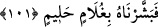
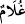
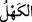
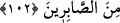
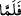
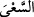
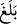

101. İşte o zaman biz onu uslu bir oğul ile müjdeledik.
“İşte o zaman biz onu uslu bir oğul ile müjdeledik.” Burada müjdelenen İbrahim
(a.s.)’ın Allah Teâlâ’dan kendisine hibe etmesini istemiş olduğu çocuğun kendisidir.
Kamus’ta der ki: “
” bıyığı henüz yeni bitmiş gençtir ve yetişkin ve orta yaş anlamına
gelen “
” kelimesinin zıddıdır. Yahut “
” çocuğun doğduğu andan gençlik dönemine
kadar olan çağdır.” Bazı lügat ehli der ki: “
” on yaşını geçendir. On yaşından küçük
olan ise sabîdir. “Halîm”, işlerde acele etmeyen, zahmet ve meşakkatlere katlanan
kendisine istenmeyen bir şey isâbet ettiğinde panik yapmayan ve kolay kolay
öfkelenmeyen kimsedir. Yâni o bülûğa erince halîm olur.
Allah Teâlâ burada üç müjdeyi bir arada toplamıştır. Birinci müjde bunun bir erkek
evlat olacağıdır. İkincisi bu çocuk büyüyüp ergenlik çağına ulaşacaktır. Zira sabî ve
bebek ergen ve halîm olarak nitelenemez. Üçüncüsü bu çocuk halim, selim, mûnis, mûti,
ağır başlı ve vakûr biri olacaktır. Evet, henüz ergenliğe yeni yeni yaklaştığı (murâhik)
bir dönemde babası kendisine onu kurban edeceğini söylediğinde hemen teslim
olmuştur. Kâşifî der ki: “Hak Teâlâ Hâcer’den İsmâil’i bağışlayınca Yüce Allah’ın
hükmü ile Şam’dan Hâcer ve oğlunu Mekke’ye götürdü. İsmâil orada büyüyüp
serpildi.”
102. Babasıyla beraber yürüyüp gezecek çağa erişince: Yavrucuğum! Rüyada
seni boğazladığımı görüyorum; bir düşün, ne dersin? dedi. O da cevaben:
Babacığım! Emrolunduğun şeyi yap. İnşallah beni sabredenlerden bulursun, dedi.
Nihâyet biz ona bir oğul hibe ettik; çocuk doğdu, büyüdü ve meşguliyet, hacet ve
maslahatlarında “Babası” İbrahim “ile beraber yürüyüp gezecek çağa erişince:”
Bahru’l-ulûm’da der ki: “burada “
” edatındaki “fa” fâ-i fasîha olup mukadder ve
gizli bir ifadeyi açıklamaktadır. Burada onunla beraber anlamına gelen “ ” kelimesi “
” kelimesine bağlıdır. Zira “ ” kelimesi zarf olup azıcık bir fiil rayihası ona
yeterlidir. Dolayısıyla “ ” fiiline bağlı değildir. Çünkü böyle bir bağlantı “çocuk
İbrahim (a.s.) ile beraber aynı anda koşma çağına ulaştı” demek olur ki durum asla
böyle değildir.” Bu koşmanın yalnız ve özel olarak babayla beraber oluşunun ifade
edilmesi, babanın, şefkat, merhamet ve çocuğun iş, hacet ve maslahatlarında koşmaya